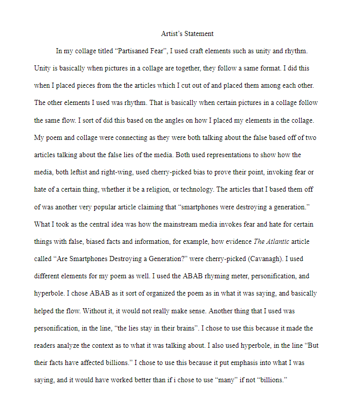

Noel's Class
For this class, we had to make a poem and art piece. They were based on a picture we chose relating to the Industrial Revolution.

Both of them had to be somehow related to each other and our photo.
That would be represented in the artist's statements, where we would write which elements we used in both the collage and poem, as well as how they were related to the industrial revolution
We then had to do same thing, except based on these articles
that we summarized reguarding Social Media. I chose the scope of Social Media and Mental Health.
After summarizing the articles, we had to write a poem and make a collage based on what we summarized. Using what the articles said, I decided to make my poem and collage on the mainstream media
Similarly to the previous collage and poem, we had to write an artist's statement. The artist's statement would have to explain our works, indetify the crafts, and show how they connect to each other and our general idea.
